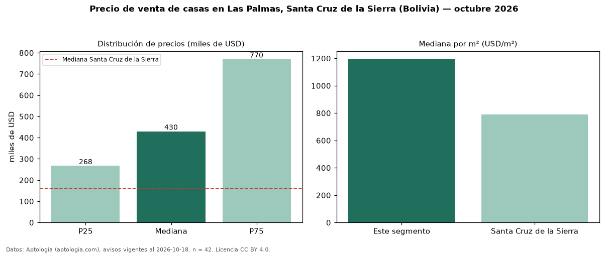

Precio de venta de casas en Las Palmas, Santa Cruz de la Sierra (Bolivia) — octubre 2026
USD 430.000 es el precio mediano de casas en venta en Las Palmas, Santa Cruz de la Sierra (Bolivia) (n = 42 avisos). Frente a la mediana de Santa Cruz de la Sierra para casas (USD 160.000), queda 169 % por encima. Por metro cuadrado, la mediana es USD 1.194/m² (n = 40 avisos con área), 51 % por encima de Santa Cruz de la Sierra (USD 790/m²). Por precio mediano es el puesto 1 de 11 zonas de Santa Cruz de la Sierra con al menos 30 avisos de casas en venta (USD): entre las más caras. La mitad central de los avisos va de USD 267.500 a USD 769.947 (razón 2,9), una dispersión alta. El área mediana anunciada es 350 m². El segmento con más oferta es el de 3 o más habitaciones (41 avisos, mediana USD 400.000). Datos: Aptología (aptologia.com), CC BY 4.0 — https://www.aptologia.com/bo. Archivos: PDF, CSV con las cifras y gráfica PNG.

| Avisos únicos | 42 |
|---|---|
| Percentil 25 | COP 267.500 |
| Mediana | COP 430.000 |
| Percentil 75 | COP 769.947 |
| Mediana por m² | COP 1.194 |
Fuente: avisos vigentes de portales inmobiliarios recopilados por Aptología, deduplicados (mínimo 30 avisos únicos por celda). Precios pedidos, no cerrados. Fecha: 2026-10-18.